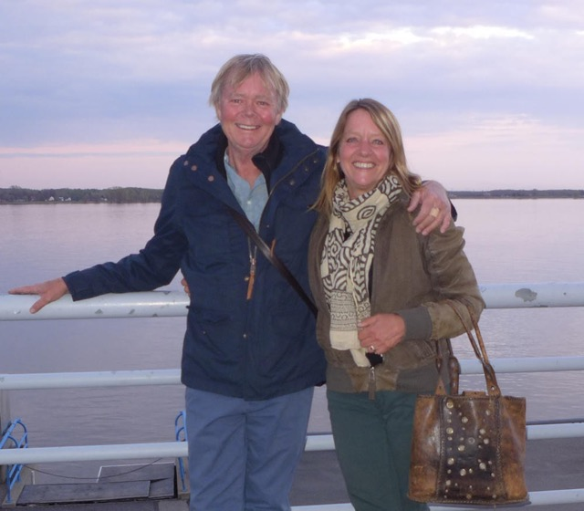
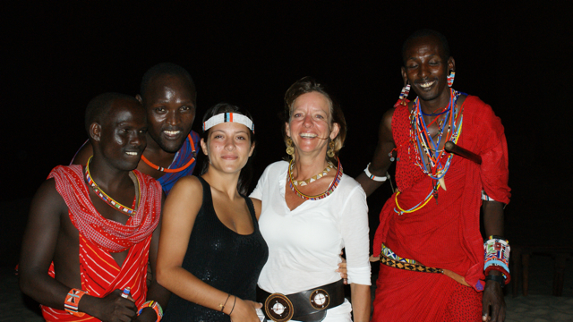

ABOUT ME

A Journey to the unexpected...
I was born in Canada, but my journey began at the age of 13 when I lived in Kathmandu for a year. This experience shaped my interest in languages, travel, and international culture. I pursued languages in college, leading to a life of traveling and exploring various places.
Career Summary:
- Lawyer: Following my father's footsteps, I became a lawyer working on prestigious private government contracts in Canada. I enjoyed a successful legal career, balancing it with travel and hobbies such as building and cooking.
- World Traveler: Love and relationships led me to explore places like Kathmandu in my teens, Kenya, Ibiza, Maui, Hawai, and Spain. Traveling in grand style, I was exposed to different cultures and lifestyles that inspired my entrepreneurial spirit.
- Transition to Manufacturing: My first visit to Africa in 2008 marked a turning point. I fell in love with Kenyan leather beaded work, especially sandals, sparking the idea of importing and selling them in Ibiza and Maui.
The Connection to Wewe: Crafting a New Path
Wewe, meaning "YOU" in Swahili, signifies my journey into the world of Kenyan beaded leather goods. My passion for these unique artistic works led me to start importing them, shaping my new identity in the process.
I began by importing to Ibiza, Maui, and Montreal, handling manufacturing in Kenya, importing, and sales. I worked with talented artisans, teaching and learning along the way. Emily, a standout worker, and I made a great team, pioneering new designs and techniques.
In 2015, I bought a property in Kenya and set up a small manufacture. I trained up to 8 workers in cutting, sewing, and gluing bags, making coasters, keychains, and more. I spent winters in Kenya manufacturing, leading to a perfect lifestyle balancing work and travel.
Building Wewe in Javea
I found an old house in Javea, Spain, where I established a shop and living space. I continued to grow my business, working with artisans in various places such as Nairobi, Naivasha, and Malindi. My product line expanded to include dog collars, belts, bags, and more, working with skilled beaders and manufacturers.
I moved my manufacturing when I married Peter in 2020. He lived in Naivasha, where artisans and raw materials are scarce. But life was filled with abundance, including, living on the most beautiful private wildlife sanctuary, and the once biggest rose flower farm in the world, Oserian flowers.
I continue to manufacture and distribute through my shop and connections, even to prestigious places like Club 55 in St-Tropez.Embracing Change and Moving Forward
The world's transition into the pandemic era brought challenges, but I adapted and reorganized my manufacturing processes. I focused on sourcing materials and artisans, continuing to create beautiful beaded works.
My journey from a successful lawyer in Canada to a shopkeeper in Javea is filled with unexpected twists, love, and a passion for craftsmanship. With the encouragement of friends like Patricia, I continue my work, committed to bringing the beauty of African leather beaded works to the world.
Wewe is not just about me; it's about embracing change, nurturing creativity, and connecting with people through the universal language of art and craftsmanship.
casatoscajavea.com
oserengoniwildlife.com
MODELS AND DESIGNS
The sandals are named after the tribes found in Kenya. The inspiration came from going on a fantastic safari in the Rift Valley on one of my first trips to Africa. The dog collars and belts are all animal names. And Wewe means you -- (especially made for WEWE.
HELPING THE KENYAN PEOPLE
Any order you make helps the Kenyan families who work with us and gives them the opportunity to give food, medication and an education to their children. I work with small workshops where most of the work is done by hand (no children). My commitment to keep them busy while they continue to produce quality craftmanship is my priority. Through your continued support, this is made possible.
